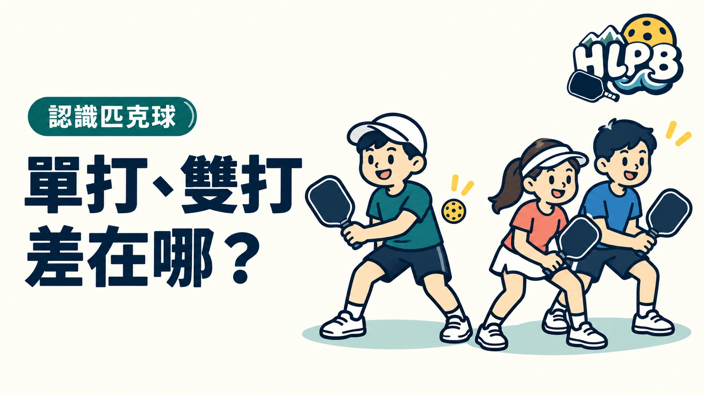

單打每邊一人，雙打每邊兩人，兩者使用相同大小的標準球場。差別不只是多一位搭檔，還包括場地覆蓋、發球順序與溝通。
| 項目 | 單打 | 雙打 |
|---|---|---|
| 每邊人數 | 1 人 | 2 人 |
| 標準場地 | 20×44 英尺 | 20×44 英尺 |
| 回球責任 | 自己處理這側來球 | 和搭檔共同判斷與配合 |
| 發球得分制的發球順序 | 自己失去發球權後交給對方 | 通常兩位依序發球，開局第一隊有例外 |
| 場上資訊 | 確認自己的站位與比分 | 也要記搭檔、發球員順序與喊球 |
單打發球，先看自己的分數
發球員分數是偶數，從右側發球區後方發球；奇數則從左側，送往對角正確發球區。換到對方發球時，改看對方自己的分數。
雙打要多記發球員順序
發球得分制的雙打通常喊三個數字：發球方分數、接發方分數、第幾位發球員。開局第一個發球隊伍只有一位有發球機會，所以常從 0-0-2 開始。其他發球輪次通常兩人依序發球。
哪些規則相同？
兩邊各自的第一球都要先落地，之後才能截擊。非截擊區限制也適用於兩種玩法。
先問球局採哪種玩法與得分制。 每球得分制或特別賽制不能直接套用這裡的發球順序說明。
來源：USA Pickleball 規則摘要 官方資料 ↗。資料核對：2026/10/13。
最後查證：2026-10-13｜資料來源：HLPB 編輯整理與正文所列官方資料
返回文章列表